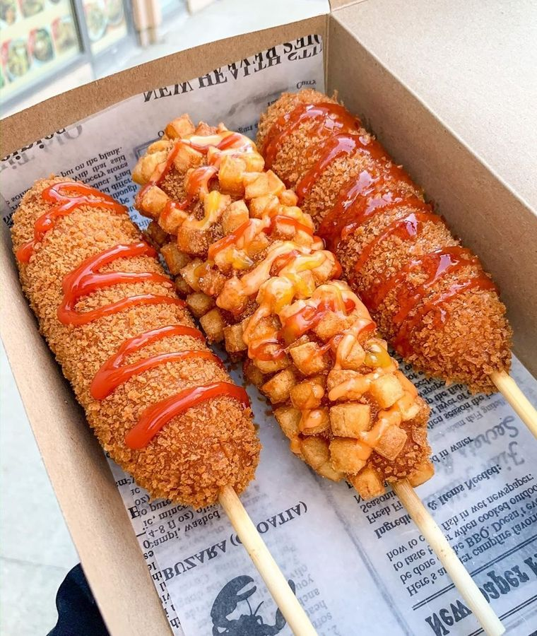

KOREAN CORN DOGS

DESCRIPTION
Korean Corn Dogs are a popular snack that are made from either sausage or mozerella,
or even both of them together! What makes them different from
American Corn Dogs is the way it is prepared. Korean Corn Dogs are fried in panko crumbs,
that give it it's signature crispy texture. It is then finsished with coat of sugar,
along with condiments ketchup, mustard, or sriracha mayo.
INGREDIENTS
- 4 hot dogs cut in half (width-wise not length).
- 8 sticks low moisture mozerella cheese (cut from blocks(about 7 ounces).
- 1 cup warm 98f water.
- 1 teaspoon infant yeast.
- 1.5 cups all-purpose flour.
- 3 table spoons granulated sugar.
- 1/2 teaspoon salt.
- 2 cups panko.
- 2 russet potatoes peeled and cut into 1/2 inch cubes then parboiled for 3-5
mins or till just 75 percent cooked.
- Oil for frying.
- Sugar for coating.
FOR SAUCE
- 1/2 cup mayo.
- 1/4 cup sriracha.
- 1 tablespoon gochujang.
- 1 teaspoon sesame oil.
- 1 tablespoon rice vinegar.
- 1 tablespoon honey.
- Salt to taste.
- Gree onion.
- Sesame seeds.
STEPS
- Heat Oil to 350F.
- Skewer dogs and cheese on sticks so you have
half and half option on each skewer with mozarella
on the top. You can also do all mozarella. Keep in
fridge cold.
- Mix together the batter, make sure it's thick
and let rise for 30-45 minutes.
- Dip dogs in tall glass of batter, and twirl
to keep it round.
- Roll immediately in potatoes and then in panko.
- Fry immediately at 350F until golden and crisp.
- Sprinkle corn dog with sugar and add sauce.
Return to Main Page.